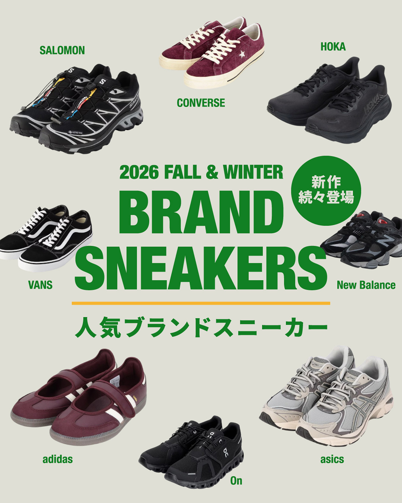
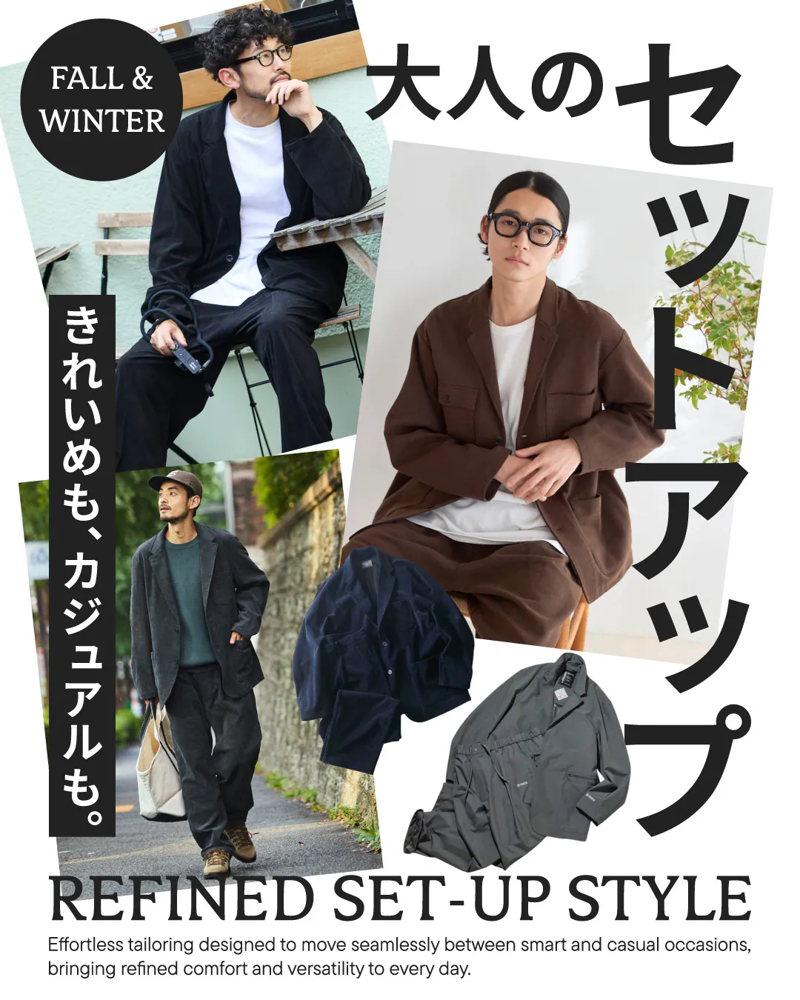
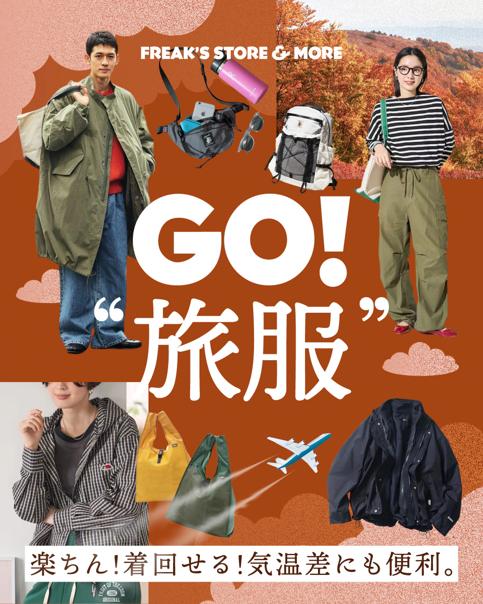
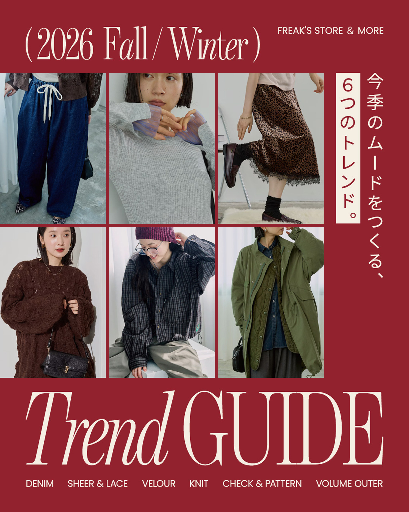

Portfolio / Selected works
KAZUE HANADA




Tokyo,
Japan
( Web Designer )
( Visual Designer )
Approach
デザインと
ビジュアルの力で、
ブランドの空気を
編集する。
ファッションとECを中心に、Web、グラフィック、写真・動画まで。情報を整理しながら、見る人の感覚に残る体験をつくります。